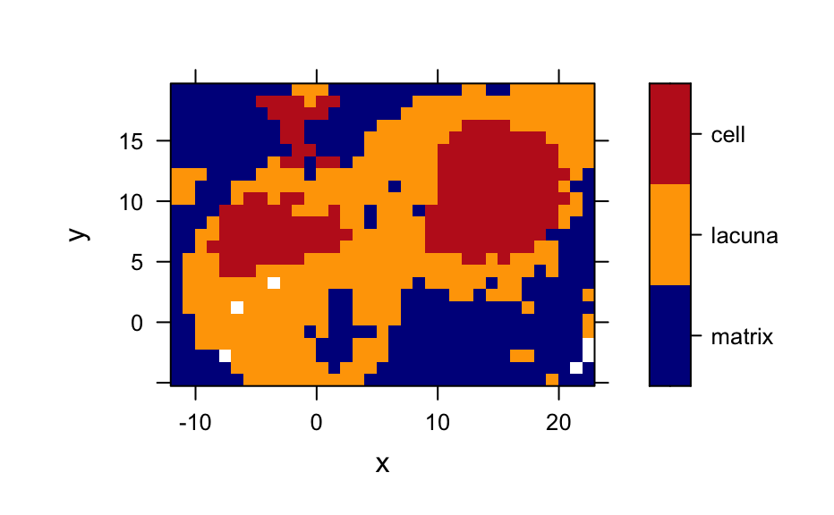
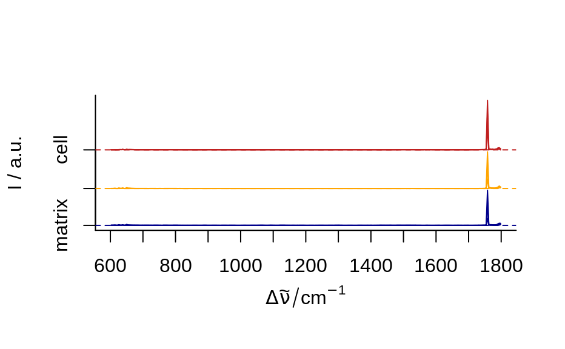
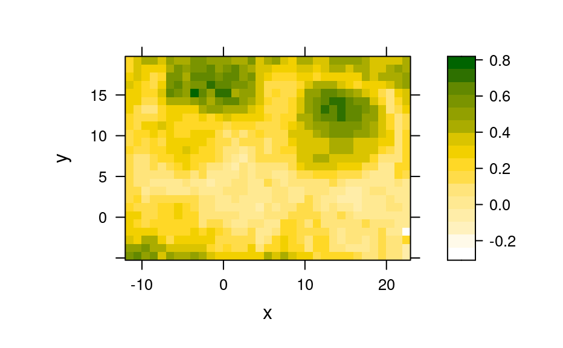

A Raman-map (laterally resolved Raman spectra) of chondrocytes in cartilage.
The data set has 875 Raman spectra measured on a 25 \(\times\)
35 grid with 1 micron step size. Spatial information is in
chondro$x and chondro$y. Each spectrum has 300 data points
in the range of ca. 600 - 1800 cm\(^{-1}\).
See the vignette vignette("chondro", package = "hyperSpec").
The raw data is available at http://hyperspec.r-forge.r-project.org/blob/chondro.zip
chondro
#> Loading required package: hyperSpec
#> Loading required package: lattice
#> Loading required package: grid
#> Loading required package: ggplot2
#>
#>
#> Package hyperSpec (version 0.200.0.9000)
#>
#> To get started, try:
#> vignette("hyperSpec", package = "hyperSpec")
#> package?hyperSpec
#> browseVignettes(package = "hyperSpec")
#> vignette(package = "hyperSpec")
#>
#> If you use this package, please cite it appropriately.
#> The correct reference is given by:
#> citation("hyperSpec")
#>
#> The project's website:
#> https://r-hyperspec.github.io/hyperSpec
#>
#> IMPORTANT!
#> Existing users of 'hyperSpec' will find that many functions either have been renamed in favor of more consistent names or moved to other packages. To help you update your workflows, the list of the renamed and moved functions resides in the NEWS file of hyperSpec's documentation:
#>
#> help(package = "hyperSpec")
#> hyperSpec object
#> 875 spectra
#> 5 data columns
#> 300 data points / spectrum
## do baseline correction
baselines <- spc_fit_poly_below(chondro)
chondro <- chondro - baselines
## area normalization
chondro <- chondro / colMeans(chondro)
## substact common composition
chondro <- chondro - quantile(chondro, 0.05)
cols <- c("dark blue", "orange", "#C02020")
plotmap(chondro, clusters ~ x * y, col.regions = cols)
#> Warning: device support for raster images unknown, ignoring 'raster=TRUE'

cluster.means <- aggregate(chondro, chondro$clusters, mean_pm_sd)
plot(cluster.means, stacked = ".aggregate", fill = ".aggregate", col = cols)

## plot nucleic acid bands
plotmap(chondro[, , c(728, 782, 1098, 1240, 1482, 1577)],
col.regions = colorRampPalette(c("white", "gold", "dark green"), space = "Lab")(20)
)
#> Warning: device support for raster images unknown, ignoring 'raster=TRUE'
